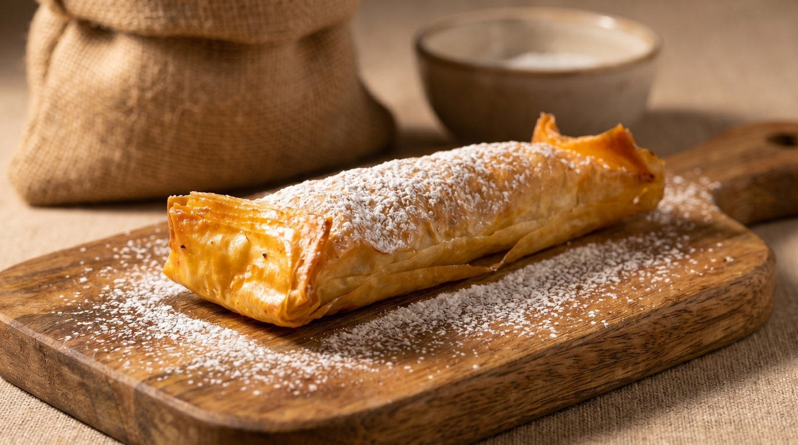
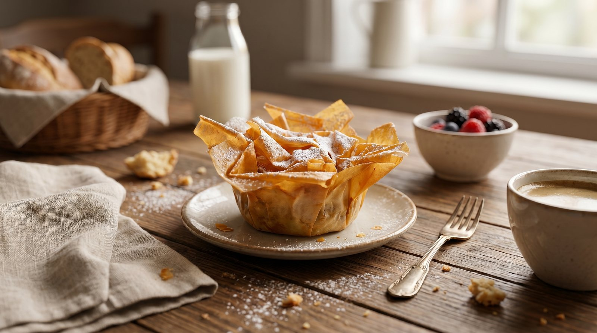
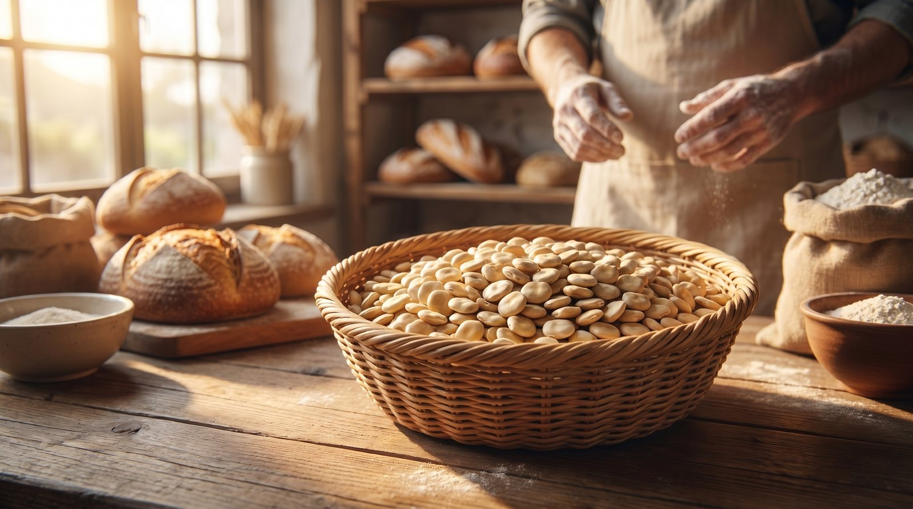
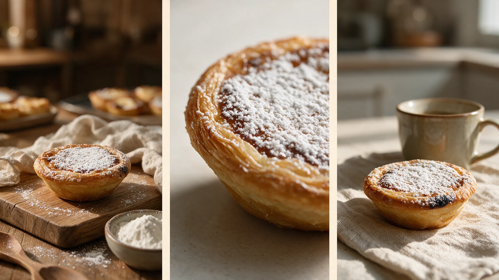
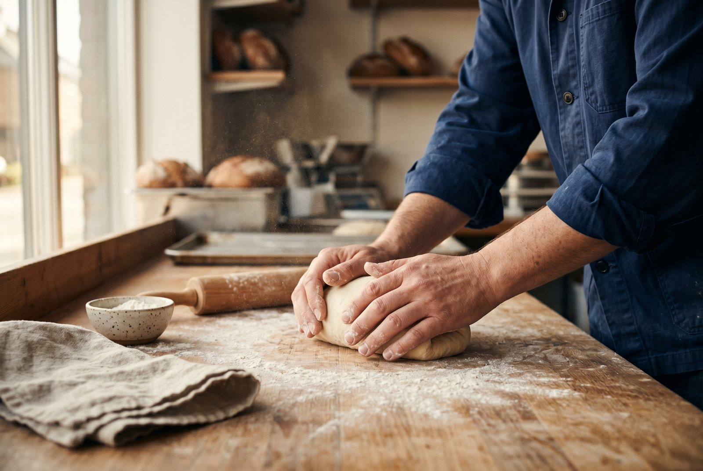
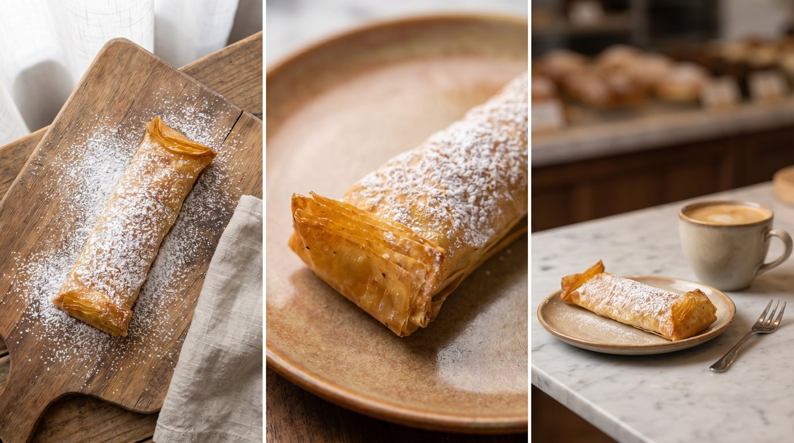
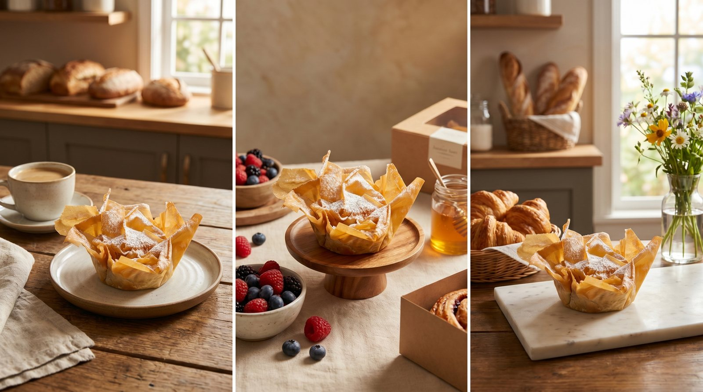
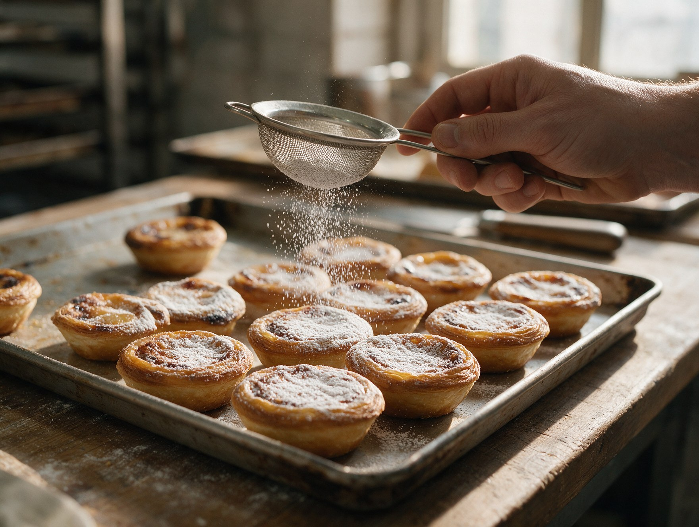
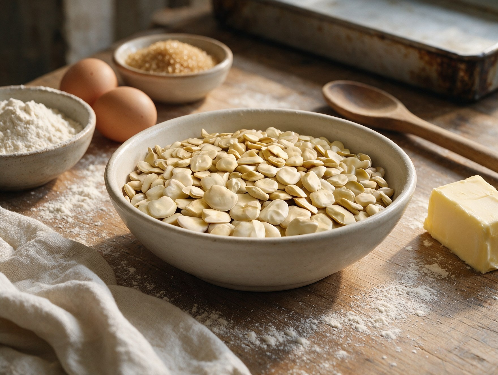
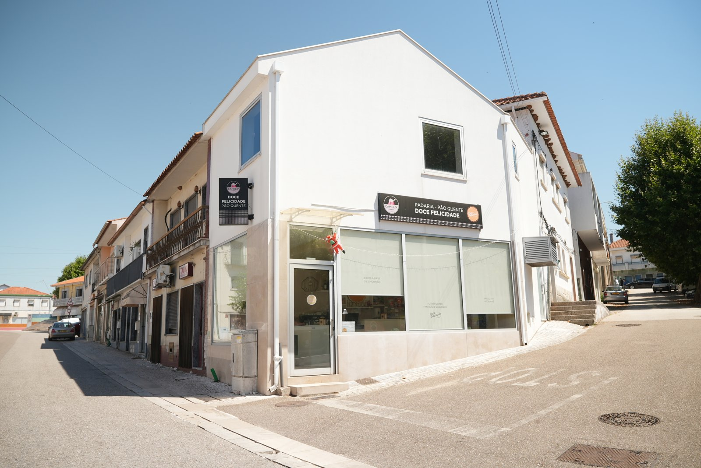

01
Pastel de Chícharo
Massa folhada dourada, açúcar em pó e recheio cremoso de chícharo. Estaladiço por fora, macio por dentro.
Preço no balcão e por encomenda Conhecer o pastel de chícharo →Uma viagem da terra de Alvaiázere à doçaria artesanal da Doce Felicidade.
Uma leguminosa antiga, cultivada na nossa terra e transformada num sabor que só existe aqui.
Pequenos lotes, massa trabalhada com tempo e recheio de chícharo preparado na nossa oficina.
Ao balcão, nos mercados e nos cafés e lojas que recebem os nossos doces.
Pastel, travesseiro e flor de chícharo — três formas de provar Alvaiázere.
O mesmo recheio cremoso de chícharo em três doces diferentes. Cada produto tem o seu nome, a sua massa e a sua textura.
Massa folhada dourada, açúcar em pó e recheio cremoso de chícharo. Estaladiço por fora, macio por dentro.
Preço no balcão e por encomenda Conhecer o pastel de chícharo →
Formato comprido, massa fina e crocante, com o recheio de chícharo que identifica a casa.
Um dos mais pedidos Conhecer o travesseiro →
Pétalas de massa fina, douradas e delicadas, abertas à volta do recheio da nossa terra.
A forma mais delicada
É uma leguminosa cultivada há gerações nesta região e um dos sabores que dão identidade a Alvaiázere. Na Doce Felicidade transformamo-la num recheio suave para o pastel, o travesseiro e a flor.
Conhecer a tradição de Alvaiázere →Feitos em pequenos lotes e preparados para conservar. Estão disponíveis no balcão, em mercados e nos cafés e lojas que fornecemos.
Aniversários, batizados, casamentos e festas de família. Combinamos consigo o sabor, o tamanho e a decoração.
Quanto mais cedo nos falar, melhor — bolos personalizados pedem tempo.
Produção própria em Alvaiázere, entrega combinada e contacto direto com quem faz.
Pequenos lotes preparados na nossa unidade de produção.
Semanal ou ao ritmo do seu negócio e da sua montra.
Sem intermediários: quantidades, dias e produtos combinados consigo.
Produtos, ingredientes e o trabalho feito à mão. Todas as legendas ficam visíveis.






A Doce Felicidade nasceu em 2014. Trabalhamos em pequenos lotes, com tempo e contacto direto com quem encomenda.
Vendemos ao balcão, em mercados da região, por encomenda e através dos cafés e lojas que recebem os nossos produtos.
Diga-nos se quer pastel, travesseiro, flor, bolos secos ou um bolo de festa.
Envie uma mensagem com quantidades e data. Respondemos e combinamos tudo consigo.
Levantamento na loja de Cabaços ou entrega a combinar na região de Alvaiázere.

Doce Felicidade
Rua dos Correios, n.º 32
3250-359 Cabaços, Alvaiázere
Terça a sábado
–
Domingo e segunda
–